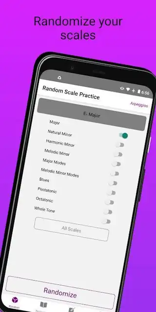
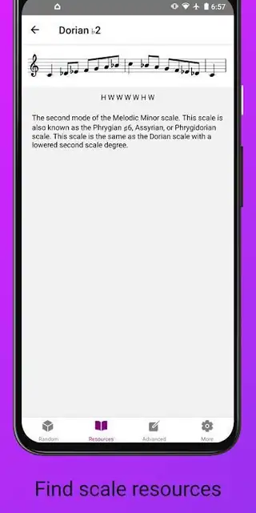

Scale Practice
صوت وفيديو وموسيقى
Scale Practice helps musicians practice their scales, by randomizing the order of scales and providing resources to learn about new scales. It contains three different functions: 1. Random scale chosen from a list of scale types 2. Random scale chosen from a list of user inputted scales 3. Scale res
✓ ترخيص مفتوح (GPL-3.0-only) · آخر تحديث: 2026-10-08
2.9.2الإصدار
87.0 MBالحجم
GPL-3.0-onlyالرخصة
Open in Kanzتحميل APK (87.0 MB)
Download APK
SHA-256: d68e47486528a53f1a67bfde24c8ce9a279a7f59b0adf2b1d8a19083e63c2d09


امسح الكود لفتح صفحة التطبيق
Scan to open this app page
لو كنز مش متثبت عندك: نزّل متجر كنز.
Not installed? Get the Kanz store.